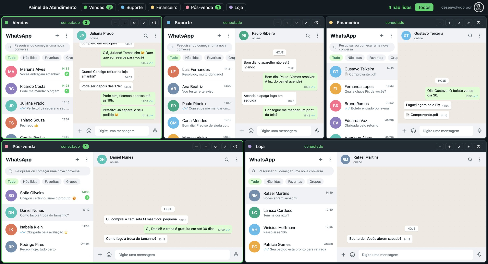
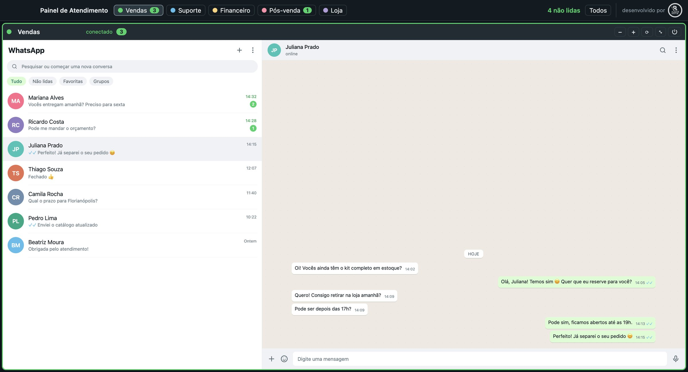
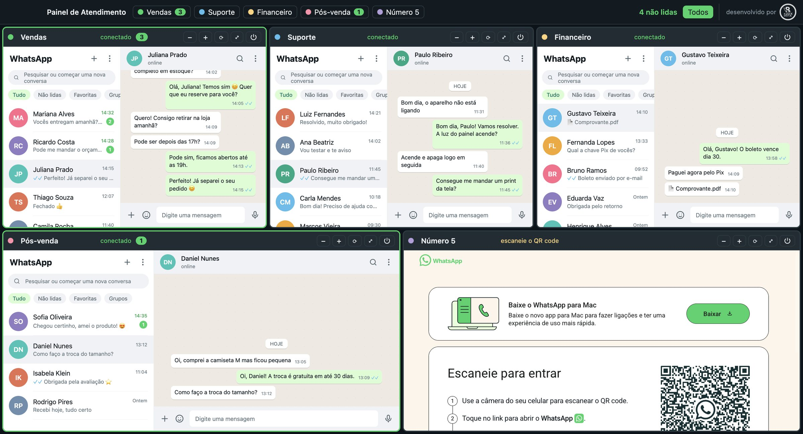

Nada passa despercebido.
Cada número mostra quantas mensagens estão esperando, ganha uma borda verde quando chega mensagem, e o total aparece no topo e no ícone do app.
Vendas 3
Pós-venda 1
Suporte
Painel WhatsApp
Toda a sua equipe atendendo os 5 WhatsApps da empresa lado a lado, sem trocar de celular.
Para Windows 10/11 e macOS 12 ou mais recente · Versão 1.0

Tela real do aplicativo. As conversas são exemplos.
Recursos
Tudo o que a equipe precisa para não deixar nenhum cliente esperando.
Cada número mostra quantas mensagens estão esperando, ganha uma borda verde quando chega mensagem, e o total aparece no topo e no ícone do app.
Vendas, Suporte, Financeiro. Todo mundo sabe onde está respondendo.
Expanda qualquer número para a tela toda e volte para a visão geral.
Três em cima, dois embaixo. Enquanto um número está expandido, os outros continuam recebendo mensagens.
O app usa o WhatsApp Web oficial. As mensagens não passam por nenhum outro servidor: ficam só no computador e no WhatsApp.
Cada número fica salvo. Abra o app no dia seguinte e os 5 já estão conectados, com notificações de todos eles.
Veja por dentro
Os 5 números de uma vez. Quem tem mensagem nova ganha borda verde e contador, e o total aparece no topo.

Um número na tela inteira. Clique em ⤢ ou use ⌘1 a ⌘5. Os outros números continuam recebendo mensagens.

Conectar é só escanear. Cada quadro mostra o QR code do WhatsApp. Leia com o celular daquele número e pronto.
Telas reais do aplicativo. As conversas são exemplos.
Como funciona
Escolha a versão para Windows ou Mac logo abaixo.
Abra o arquivo e siga o instalador. Leva menos de um minuto.
Em cada quadro, leia o QR code com o celular daquele número. Pronto.
Download
Escolha o sistema do computador onde a equipe vai atender.
Windows 10 ou 11 · 64 bits · 106 MB
Baixar para Windows Painel-WhatsApp-Windows-Instalador.exemacOS 12 ou mais recente · Intel e Apple Silicon · 217 MB
Baixar para Mac Painel-WhatsApp-Mac.dmgPrefere ter tudo impresso? Baixe o guia em PDF
Guia
Tudo explicado passo a passo. Toque em um tópico para abrir.
Se o Mac bloquear o app: clique em OK, abra Ajustes do Sistema → Privacidade e Segurança, role até o final e clique em Abrir Mesmo Assim.
Se a mensagem disser que o app "está danificado", abra o app Terminal, cole o comando abaixo, aperte Enter e abra o app de novo:
xattr -cr "/Applications/Painel WhatsApp.app"O aplicativo ainda não tem assinatura digital da Microsoft e da Apple, então o sistema pede uma confirmação na primeira vez que ele é aberto. Isso é normal e só acontece uma vez.
Ao abrir o app, aparecem 5 quadros, cada um com um QR code. Para cada número:
| −+ | Diminui ou aumenta o tamanho das letras e imagens daquele quadro. |
| ⟳ | Recarrega o número. Use se ele travar ou parar de atualizar. |
| ⤢ | Expande o número para a tela inteira. Clique de novo para voltar a ver todos. |
| ⏻ | Desconecta o número. Use só para trocar o número daquele quadro. |
⌘ 1 a ⌘ 5 expandem um número e ⌘ 0 volta para todos. No Windows, use Ctrl no lugar de ⌘.
O QR code aparece cortado. Clique no botão − do quadro ou expanda o número com ⤢.
Um número pediu o QR code de novo. Ele foi desconectado pelo celular ou ficou muito tempo sem internet. Escaneie o QR code novamente.
Um quadro está em branco ou travado. Clique em ⟳. Se não resolver, feche e abra o app.
Aparece "sem conexão". Confira a internet do computador. O quadro tenta reconectar sozinho a cada 5 segundos.
Não chegam notificações. No Mac: Ajustes do Sistema → Notificações → Painel WhatsApp. No Windows: Configurações → Sistema → Notificações → Painel WhatsApp.
Windows: Configurações → Aplicativos → Painel WhatsApp → Desinstalar.
Mac: arraste o Painel WhatsApp da pasta Aplicativos para o Lixo.
Para desconectar os números completamente, confira também no celular: WhatsApp → Dispositivos conectados → toque no computador → Desconectar.